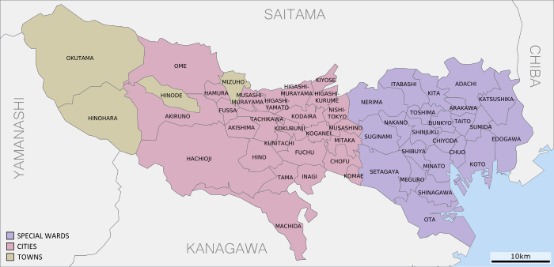
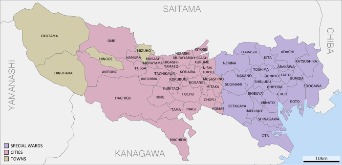

Selecciona el nivel de estudios que se adapte a tu búsqueda.
Professional training schools provide vocational education as well as education in skills, technology, and knowledge needed in life, and students graduating from professional training schools achieve a high employment rate compared to students graduating from universities or junior colleges. Furthermore, recently special training schools offer a variety of course options, including courses available to admission to universities or graduate schools. Professional training schools are characterized by a variety of entrance qualifications specified (e.g., courses for students graduating from junior high schools or those where students’ education backgrounds are not questioned), where students study one to four years. Students graduating from professional training schools will receive a diploma.
You can download a detailed guidebook about the professional training school system from the following website.Professional Training College in Japan Guidebook（http://www.sgec.or.jp/ryuugakuguide/download/en.html）
There are national, public and private universities in Japan. The length of study in an undergraduate university is four years with the exception of medicine, dentistry and veterinary science department, which require six years of study.
The length of study in a graduate school depends on whether you are matriculated in a master's program or doctor's program. Master's program: lasts for two years. Doctor's program: lasts for five years. Generally, the doctor's program is divided into the first period (two years; applicable to the above-mentioned master's program) and the latter period (three years). However, the length of study for the doctor's program in medicine, dentistry and veterinary science (entered upon after completion of the six-year undergraduate courses in medicine, dentistry or veterinary science) is four years. Some universities offer doctor's programs covering the full five years while others offer only the final three years.
For information regarding specific graduate schools, please refer to the Asian Students Cultural Association web site. (http://www.jpss.jp/eng/index.html)
Higher educational institutions in Japan, in principle, conduct all their classes in Japanese with only a limited number offering classes in English . It is extremely important, therefore, that international students wishing to study in Japan have an adequate knowledge of the Japanese language. For this reason many international students study the language in Japan for six months to two years before applying to higher educational institutions for admission. In almost all cases, the qualification for entering an institute providing Japanese-language education is to have completed at least 12 years of school education or to have attained an equivalent level of academic ability.
Selecciona el area de estudios que se adapte a tu búsqueda.
Los centros de formación profesional orientan a sus alumnos a desarrollar un conjunto de habilidades que les permitan trabajar de ello en Japón. Estos centros imparten más de una especialidad por lo que tu búsqueda dependerá de la prefectura que hayas elegido donde estudiar.
Las escuelas enfocadas a enseñar el japonés suelen tener multitud de cursos donde se potencian diferentes habilidades relacionadas con el japonés. Dado que para estudiar en Japón, en muchas universidades y centros profesionales se pide un nivel alto de japonés para poder seguir las clases, hay cursos enfocados a pasar el exámen de certificación de japonés, cursos de japonés general, cursos enfocados al japonés de negocio... todo ello variará según la escuela.
 
